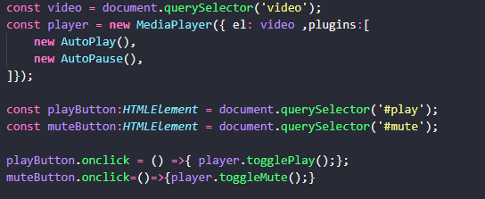

An extensible media player.
Did you know the only way to autoplay videos on a website is when they're muted? Well, this is a plug-in to help you to fo that without having to mute mannually your videos. This page is actually using it.
For starting using this plugin you should use npm and run the following command:
npm i @devsaxguy/johnnysax-mediaplayerOnce you have it installed you shoulg import the MediaPlayer class from it and attach your video like in the following image, where in the constructor you could pass the HTML element, and the plugins you'll going to use in an array, such as AutoPlay and AutoPause.
This will allow you to Autoplay any video on your webpage muted. You can controll the video and even the audio using the buttons below the video.
If you want to know more about this plugin you can activate the plugin Ads, that will show you many good courses where you can learn how to do your own and many other interesting stuff.